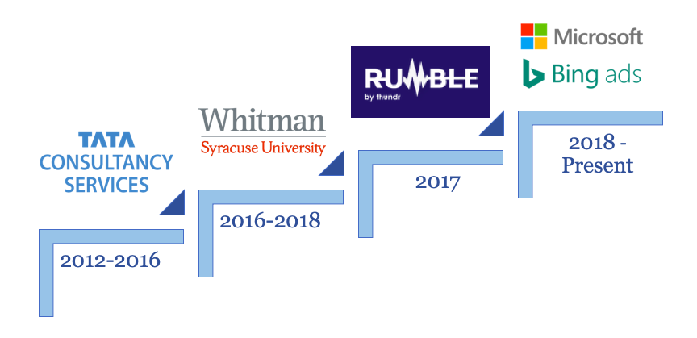
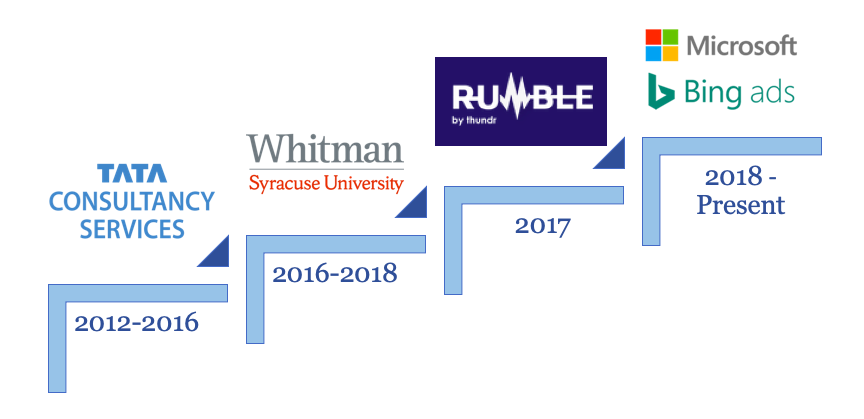

I'm Abhishek
a digital marketer.


Premium Account Specialist at Microsoft Bing Ads
A conscientious self-starter with ability to strategize effectively in fast-paced environment. I'm passionate about digital marketing with hands-on experience in paid search. My areas of interest include SEO, search marketing, data visualization and data-driven digital strategy.
| Tableau 10 ⭐️⭐️⭐️⭐️ | Power BI ⭐️⭐️⭐️ | My SQL ⭐️⭐️⭐️⭐️ |
| Google Analytics ⭐️⭐️⭐️⭐️ | Google Tag Manager ⭐️⭐️⭐️ | Google Ads ⭐️⭐️⭐️⭐️⭐️ |
| MS Excel ⭐️⭐️⭐️⭐️⭐️ | Power Pivot ⭐️⭐️⭐️⭐️ | Query Editor ⭐️⭐️⭐️⭐️⭐️ |
| HTML 5 ⭐️⭐️⭐️⭐️⭐️ | CSS 3 ⭐️⭐️⭐️⭐️ | Javascript ⭐️⭐️⭐️ |
 

| Position | Location | Date |
|---|---|---|
| Premium Account Specialist, Microsoft (Vendor - HCL America, Inc.) | Boston, MA | Oct. 2018 - Present |
| Data Analyst Intern, Syracuse University | Syracuse, NY | Oct. 2017 - May 2018 |
| Marketing Intern, Thundrmedia, Inc. | New York City, NY | June 2017 - Aug. 2017 |
| Senior Analyst, Tata Consultancy Services Ltd. | Pune, India | Dec. 2014 - June 2016 |
| IT Analyst, Tata Consultancy Services Ltd. | Pune, India | May 2013 - Nov. 2014 |
| Operations Analyst, Tata Consultancy Services Ltd. | Pune, India | July 2012 - April 2013 |

| Degree | University Name | Date |
|---|---|---|
| Master of Business Administration (MBA) | Syracuse University, Martin J. Whitman School of Management | Aug. 2016 - May 2018 |
| Bachelor of Engineering in Computer Science | Amravati University, India | Aug. 2008 - June 2012 |
| Certification | Credential |
|---|---|
| Tableau 10 for Data Science | Credential ID: UC-7GR2MZAB (Udemy) |
| MailChimp Email Marketing | Credential ID: UC - SZSRKJYV (Udemy) |
| Google Analytics | License: 14629617 |
| Google Ads Search | License: 24155236 |
| Google Ads Fundamentals | License: 12995383 | Search Ads 360 | License: 13803343 |
| YouTube Channel Growth | License: 28282905 |
| Bing Ads Accredited Professional | NA |
| Feature | Contact Me |
© 2019 Abhishek Nichat. |